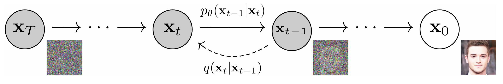

扩散模型 （Diffusion Model）基础 ：
1. 核心
扩散模型通过模拟数据的前向扩散（逐步加噪）和反向扩散（逐步去噪）生成样本，其特点包括：
- 借鉴非平衡热力学理论
- 基于马尔可夫链 实现 添加噪声/去除噪声过程
- 通过分数匹配（Score Matching）优化模型
2. 前向扩散过程
定义
- 生成模型的本质就是估计给定数据样本的概率密度函数(PDF)，然后根据估计的PDF采样随机生成。只是，对于深度生成模型，这个PDF没有显式的表达式，需要靠神经网络进行拟合。
如上图， 其中 $\mathbf{x_T}$ 为纯高斯噪声，$\mathbf{x_0}$ 为生成的样本，从一个无噪声的图像 $x_0$ 开始,正向扩散的过程是一个从时间 t = 0 到 t = 1 的持续时间随机过程 ，逐步向图像 $\mathbf{x}$ 引入噪声，直至在 t = 1 时候图像完全变成高斯噪声。
逐步添加高斯噪声的前向过程：
$$ q(\mathbf{x}_t | \mathbf{x}_{t-1}) = \mathcal{N}(\mathbf{x}_t; \sqrt{1-\beta_t}\mathbf{x}_{t-1}, \beta_t\mathbf{I}) $$- $\beta_t \in (0,1)$ 为噪声调度参数
- $t \in {1,2,…,T}$
闭合形式解
任意时间步的直接采样公式：
$$ \mathbf{x}_t = \sqrt{\alpha_t}\mathbf{x}_0 + \sqrt{1-\alpha_t}\epsilon, \quad \epsilon \sim \mathcal{N}(0,\mathbf{I}) $$- $\alpha_t = \prod_{s=1}^t (1-\beta_s)$
- $\bar{\alpha_{t}} = \prod_{s=1}^t \alpha_s$
3. 反向扩散过程
参数化建模
学习反向高斯转移分布：
$$ p_\theta(\mathbf{x}_{t-1} | \mathbf{x}_t) = \mathcal{N}(\mathbf{x}_{t-1}; \mu_\theta(\mathbf{x}_t, t), \Sigma_\theta(\mathbf{x}_t, t)) $$4. 训练目标
训练是通过优化通常的负对数似然的变分界来完成的：
$$ \mathbb{E} \left[ -\log p_\theta(\mathbf{x}_0) \right] \leq \mathbb{E}_q \left[ -\log \frac{p_\theta(\mathbf{x}_{0:T})}{q(\mathbf{x}_{1:T} \mid \mathbf{x}_0)} \right] = \mathbb{E}_q \left[ -\log p(\mathbf{x}_T) - \sum_{t \geq 1} \log \frac{p_\theta(\mathbf{x}_{t-1} \mid \mathbf{x}_t)}{q(\mathbf{x}_t \mid \mathbf{x}_{t-1})} \right] = L $$通过随机梯度下降优化L的随机项，可以实现有效的训练。进一步的改进来自方差减少，将 L重写为：
$$ \mathbb{E}_q \left[ \underbrace{D_{\mathrm{KL}}(q(\mathbf{x}_T \mid \mathbf{x}_0) \,\|\, p(\mathbf{x}_T))}_{L_T} +\sum_{t > 1} \underbrace{D_{\mathrm{KL}}(q(\mathbf{x}_{t-1} \mid \mathbf{x}_t, \mathbf{x}_0) \,\|\, p_\theta(\mathbf{x}_{t-1} \mid \mathbf{x}_t))}_{L_{t-1}} -\underbrace{\log p_\theta(\mathbf{x}_0 \mid \mathbf{x}_1)}_{L_0} \right] $$简化损失函数
实际采用加权MSE：
$$ L_{\text{simple}}(\theta) := \mathbb{E}_{t, \mathbf{x}_0, \boldsymbol{\epsilon}} \left[ \left\| \boldsymbol{\epsilon} - \boldsymbol{\epsilon}_\theta\left( \sqrt{\bar{\alpha}_t} \, \mathbf{x}_0 + \sqrt{1 - \bar{\alpha}_t} \, \boldsymbol{\epsilon}, \, t \right) \right\|^2 \right] $$参考文献
Denoising Diffusion Probabilistic Models
https://arxiv.org/abs/2006.11239
Fast-DDPM: Fast Denoising Diffusion Probabilistic Models for Medical Image-to-Image Generation
https://ieeexplore.ieee.org/abstract/document/10979336
二、 扩散模型文献
Fast-DDPM: Fast Denoising Diffusion Probabilistic Models for Medical Image-to-Image Generation
https://ieeexplore.ieee.org/abstract/document/10979336
扩散模型已经成为高质量图像生成的强大工具。前向扩散过程将噪声添加到高质量图像中，直到它成为纯高斯噪声。
然后训练图像去噪器学习反向过程，逐步从随机高斯噪声中去除噪声，直到重建无噪声图像。
这使得生成符合训练数据集分布的新高质量图像成为可能。 除计算机视觉外，扩散模型越来越多地应用于医学成像，以改善疾病诊断，治疗计划和患者监测。
1. 半监督学习
Semi-Supervised CT Denoising via Text-Guided Mamba Diffusion Models
https://ieeexplore.ieee.org/document/10931030
主要内容
低剂量计算机断层扫描（CT）减少了患者的辐射暴露，但它引入了噪声和伪影，可能误导诊断。扩散方法，在保留细节的同时有效地减少了图像的平滑。然而，迭代采样会耗费大量的时间。此外，获得大量配对的低剂量和正常剂量CT图像在临床上具有挑战性，不同的身体区域和设备的成像结果也不同。
本文提出了一种新的半监督扩散模型。此外，在去噪任务中设计了与不同解剖区域和设备相关的文本信息，并开发了一种文本引导方法，使模型能够生成准确的去噪结果，而无需为每个区域或设备单独建立模型。实现了一种非对称编码器-解码器结构，其特点是基于状态空间模型的编码器增强了噪声预测能力。
此外，为了提高采样效率，在采样过程中提出了重绘特征。它可以根据噪声水平调整重绘率，确保详细的图像保存，同时显着减少时间。使用GE和Siemens两种设备，在两种低剂量设置（10%和25%）下扫描头部和胸部体模，共获得13499片。用于评估的体模数据集独立于训练集进行扫描，包括来自两台设备的两个站点的总计1400张图像。我们的方法通过处理各种身体部位和设备切片，优于部分无监督和有监督的方法，并且比去噪扩散概率模型（ddpm）快100倍。